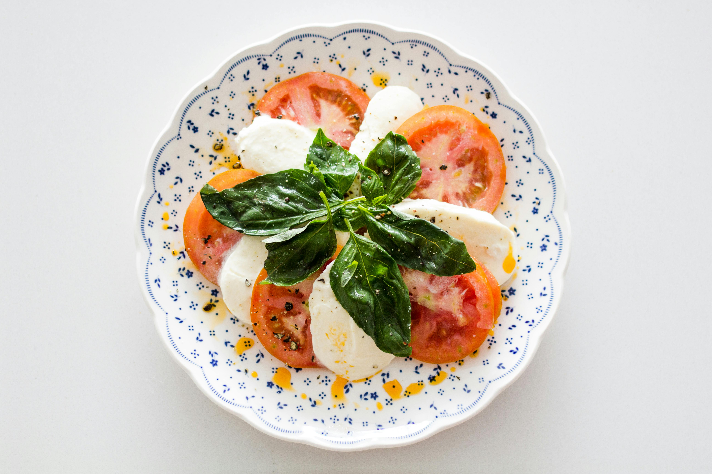

Caprese Salad

Description
Caprese Salad is a light and refreshing appetizer to set out at dinner parties. Everyone loves cheese and tomato pairs lovely with a good mozzerella.
A good amount of salt cuts through the fatty olive oil and sour vinegar. Try this recipe and blow everyone away. Simple, lovely, easy.
- 8 oz Mozzerella Cheese
- 2 Large Tomatoes
- Balsamic Vinegar
- Olive Oil
- Bazil
- Salt
- Black Pepper
- Cut your tomoto and mozzerella into centimeter thick slices.
- Lay them out in any pattern you wish on the platter.
- Apply the olive oil and balsamic vinegar to your liking.
- Apply the salt and black pepper to your liking. Serve
Home